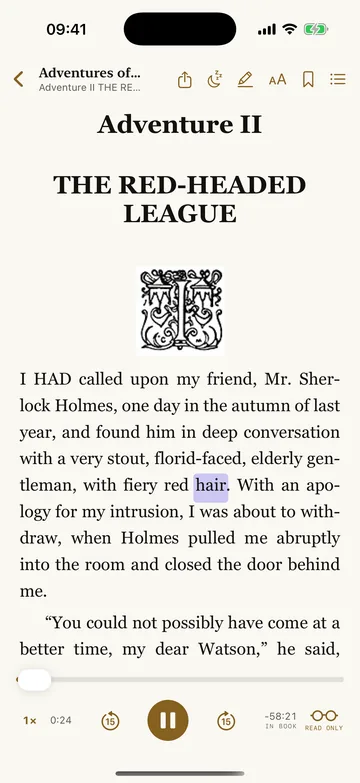
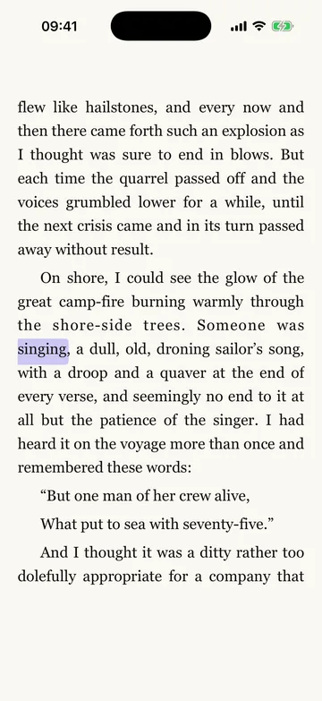
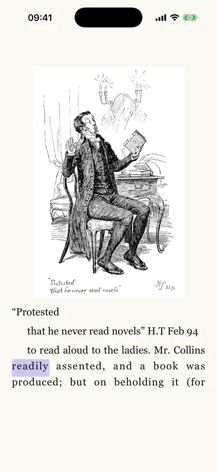
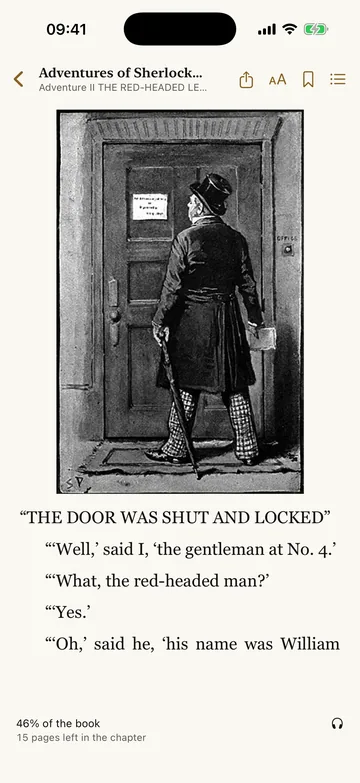
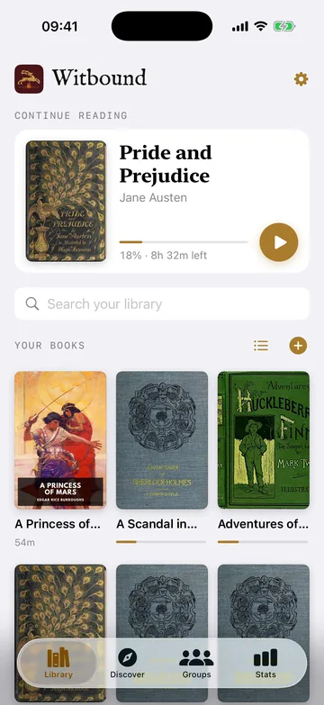
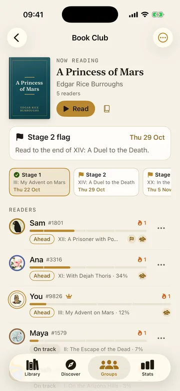
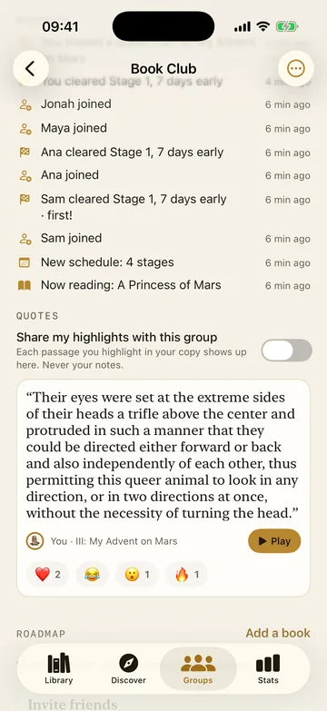
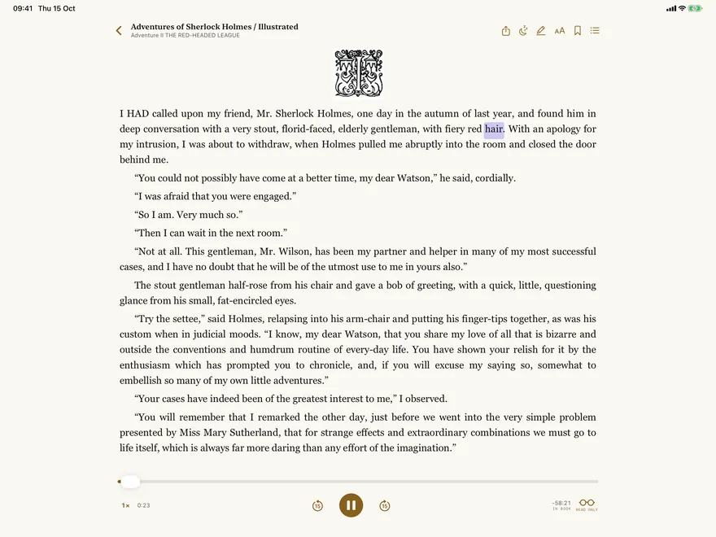

Read-along for books you own
The narrator reads. The words light up.
Your ebook and its audiobook, matched word by word on your iPhone or iPad. No account, and your books never leave the device.
- $9.99 once
- Free classics
- First book free
For iPhone and iPad on iOS 26 or later, and Android 8 or later.
Rated 4.8 from 6 ratings in the US App Store. Read the reviews
The narrator reads: A slow and heavy step, which had been heard upon the stairs and in the passage, paused immediately outside the door. Then there was a loud and authoritative tap. “Come in!” said Holmes.
Recorded from the app, with the narration it was playing.
A Scandal in Bohemia, read by David Clarke. Recording: LibriVox. Text and illustration: Project Gutenberg. Both are in the public domain.
How it works
Bring an ebook and its audiobook. Your phone does the rest.
Two files you already own become one book you can hear and see. The matching happens on your iPhone or iPad, and your books are never uploaded.
Add both halves
An epub (Kobo .kepub works too) or a PDF, and the audiobook as m4b, m4a, mp3, flac, wav or aiff. A folder of parts becomes one book, with a chapter for each part.
Your iPhone matches them, once
It goes through the narration and lines every spoken word up with the page. You can start reading when chapter one is done. The rest finishes in the background, overnight while it charges if you like, and a notification tells you when it’s ready. If your iPhone gets warm, it rests for a minute or two, then carries on by itself.
Press play
The narrator reads and each word lights up on the book’s own pages. Tap any word and the audio jumps there. Your place is kept to the word.
One catch. Audible and Kindle-store books won’t open. They’re copy-protected, and Witbound won’t break that. DRM-free books work: Libro.fm, LibriVox, Standard Ebooks and Project Gutenberg. New to this? Start with the free public-domain pairs.
Word by word
Every word lights up as it’s spoken.
The highlight follows the voice a word at a time, on the publisher’s own pages: italics, small caps, illustrations and maps all where they belong. Tap a word to send the narrator there.
Light a single word, a phrase, a sentence or the whole paragraph, in indigo, warm gold, teal or rose. A reading window can dim everything but the lines being read, and the highlight can run a beat ahead of the voice, for readers who like to be ahead. Both are off until you turn them on.
Pause and keep reading with your eyes; press play and the narrator starts where you are. At the end of a long day the controls fade while you listen, the sleep timer only counts while the book is playing, and play picks up a few seconds before where you stopped, further back after a long break.


The longest audiobook I’ve tested. The highlight stayed on the word.
of narrated words matched in the median recording, when I synced 32 LibriVox recordings of 26 public-domain books on a Mac in September.203 hours of LibriVox narration. Lowest 92.8%, highest 99.4%.
steps of speed, from 0.5× to 2×, so you can listen at exactly the pace you like.
The page


The whole book, pictures and all.
Plates and maps stay where the publisher put them. Tap an illustration to see it full screen and zoom in.
Set the page the way you read. Choose the font, the size, how wide the text runs and how much room sits between the lines, and the text can be justified or left aligned. One of the four fonts is Atkinson Hyperlegible, drawn for readers with low vision, and text goes up to 40 points. Read on Paper, Sepia or Night, which is for the last chapter in bed, with the screen turned down.
Some nights you only want the page. Press and hold a book and choose Read without audio, or tap Read only on the player while you listen. There’s no player on screen, a tap turns the page, and nothing plays until you ask for the narrator again. When you want the voice back, tap the small headphones under the page: the narrator starts on the page you’re reading, and the page stays where it is.
Press and hold, then choose Highlight or Add Note; to select a passage, tap a sentence or drag across exactly the words you want. A highlight keeps its punctuation, from the opening quote mark to the full stop. Bookmarks, highlights and notes stay with the book, and every book keeps them in a notebook: search it, tap an entry to jump to that page and that moment in the audio, and export it as text or Markdown.
Your library
Your books, from wherever they already live.
Plain files work, and so do the servers you already run. Nothing is copied anywhere you didn’t choose.
Bring an ebook and its audio from the Files app, iCloud Drive or AirDrop. Or connect your own audiobook server, at home, over Tailscale or with an API key, and browse it with covers and narrators. Your place syncs both ways, so the server’s other apps pick up where you stopped.
Pair the audiobook with the ebook from your own OPDS catalogue, import from your media server, or let Witbound for Mac send a book over your own Wi-Fi, already synced. No ebook at all? Witbound offers to find it in your library first. If there isn’t one, it writes the book from the narration, chapter by chapter.
Discover is a tab beside your Library. Its free classics are twenty public-domain books with their LibriVox recordings, already synced, and they never use up your free book. Its Synced list shows editions and narrations that sync almost instantly. Witbound doesn’t provide books: get your own copies of that edition and narration, and syncing is almost instant. Tap a book to read a short description of it, when Open Library has one.
Which servers? Support lists the ones that work.

Groups
Read a book with your friends.
Start a group, pick a book you’ve synced, and invite friends with a code. Everyone reads their own copy, in their own edition, and the group keeps pace together.
The owner splits the book into stages that end at chapters, each with a date to reach it by. When a reader clears a stage, the group sees it. The track shows where every reader is, from the start to the end, and who’s reading right now. A different edition is matched to the owner’s chapters.
Highlight a passage and share it with the group. Friends see it in their own copy once they reach that chapter, so nothing is spoiled, and can play it in their own narrator’s voice or react with one of four emoji. Only where the passage is goes to the group, never its words or your notes.
If the group turns on Read or die, missing a stage’s date puts you out of the group until it starts its next book, unless the owner lets you back in. The owner plays by the same rule. No money, ever: just pride.
Send friends the 8-letter code or the link. They type the code, or paste the link, in the Groups tab.


On every screen
One book, on the screens you read on.
Witbound is for iPhone and iPad, with a free companion for the Mac that does the slow part, and an app for Android on Google Play.

Your iPhone and iPad
Your place in each EPUB book follows you between your own iPhone and iPad through your iCloud, with no account. Open the book on one and Witbound offers to continue from where the other got to, by the device’s name. Your place stays in your own iCloud and never reaches Witbound. Both need the same ebook and the same Apple Account, and there’s an off switch in Settings.
Your e-reader
Set up any KOReader sync server in Settings and your place goes both ways. Come back from your e-reader and Witbound offers to continue from it, by its name, then lands on that page and the nearest point in the narration. Go the other way and your e-reader opens on the page you were reading, not at the start of the chapter.
Free · macOS 26 or later
Witbound for Mac
Drop in an ebook and its audiobook, as files or folders. Your Mac syncs it in minutes, not hours, then sends it to your iPhone or iPad over your own Wi-Fi, already synced.
It browses your own library servers, and converts DRM-free Kindle files if you install the free converter the Mac page names. Signed and notarised by Apple, for Apple silicon and Intel.
Google Play · Android 8 or later
Witbound for Android
Bring an epub and its audiobook (m4b, m4a or mp3) from your files or Google Drive, or from your own library servers. Your phone does the matching, and the words light up as they’re spoken.
Pick from four fonts, set the text from 12 to 40, and adjust line and paragraph spacing, or read in one continuous scroll that follows the narrator. Every book has a notebook for your highlights, notes and bookmarks, and Return to narration takes you back to the spoken word. Syncing shows about how long is left, and if Android pauses a long sync, one tap carries on.
Your first book is free. Witbound Plus is a one-time purchase on Google Play, separate from the App Store. PDFs and Receive from your Mac are on iPhone and iPad.
What leaves your phone
What leaves your phone, and what never does.
There’s no account, no ads and no analytics that track you. One feature talks to Witbound by default, community sync, and it shares timings, not books.
Stays on your device
- Your ebooks, and your audiobooks too unless you turn on Cloud sync on Android
- Your library and your reading stats
- Highlights, notes and bookmarks, unless you share them, or send them to a library server of yours that takes highlights
- Your settings
Goes online, and when
- Community sync: word timings and fingerprints of the book, never its text, title or audio. There’s an off switch in Settings.
- On Android, Cloud sync, if you turn it on: an English audiobook’s audio, in five-minute pieces over Wi-Fi, to Witbound’s server, which turns it into timed words and deletes it. Never your ebook.
- Your place in each book, to your own iCloud, so your iPhone and iPad can pick up where the other left off. Witbound never sees it, and there’s an off switch in Settings.
- Servers you connect yourself: your own audiobook server, ebook catalogue or media server, or a KOReader sync server (which ones).
- Your purchase, through Apple or Google Play.
- Anything you choose to share: a quote, a note, a progress card.
- Discover, when you use it: the public Wanted and Synced lists and your searches in them, book covers and short descriptions, a book you add (looked up in Open Library or Google Books) and the free classics you get, from Project Gutenberg and the Internet Archive.
- Your to-read list, and a book you’ve synced, only if you choose to share them.
Your book and its audio
Stay on the device. (On Android, Cloud sync sends the audio only if you turn it on, then deletes it.)
A timing map
Word positions and times. No text, no audio.
The next reader with the same edition
Their copy is ready in seconds.
If someone has already synced your edition, your copy is ready in seconds. Since version 1.8.2 Witbound also recognises the same book when the files aren’t identical: a friend’s copy, a different epub edition, or audio that was re-encoded. When your iPhone checks a shared sync against your own audio, it goes chapter by chapter, shows how far it has got, and lets you read the chapters it has checked. When you tap Share on a book you’ve synced, it’s sent straight away, without waiting on the online catalogue, and once it’s listed, the next reader with that edition sees it on Discover’s Synced list.
On the App Store, Witbound’s privacy label lists Identifiers, Usage Data, User Content and Other Data as Data Linked to You
, and Search History as not linked. What’s linked is Groups, and only if you join one: your group name and picture, a device key in place of an account, your place in the group’s book, the quotes you share there (where they are in the book, never its words), and the groups and books you add. Community sync’s timing maps and Discover’s lists still don’t say who you are. The privacy policy says exactly what is sent, and where.
The price
$9.99, once. Your first book is free.
No subscription, and nothing that renews. Your first book syncs free, start to finish, before you pay anything. After that, one payment covers every book.
Free
$0to download
Everything, for your first book: synced in full, and read along for as long as you like. A sync that fails doesn’t use it up, and the free classics in Discover, already synced, never use your free book. Witbound for Mac is free too.
Witbound Plus
$9.99once
One payment, kept for good: every book you add, synced word by word, with every feature on iPhone and iPad. Nothing renews, and there’s no account to make. Restore purchases brings it back on a new iPhone or iPad.
Download on the App StoreElsewhere it’s £9.99, €9.99, C$12.99 or A$14.99, set by the App Store for your country.
Questions
Will my Audible or Kindle books work?
No, and they never will. They’re copy-protected, and Witbound won’t break that. DRM-free books work: Libro.fm, LibriVox, Standard Ebooks and Project Gutenberg. New to this? Start with the free pairs.
What do I need?
An iPhone or iPad on iOS 26 or later, an ebook (epub or PDF) and its audiobook (m4b, m4a, mp3, flac, wav or aiff). Or connect your own audiobook server, ebook catalogue or media server: which servers work. On Android 8 or later: an epub and its audiobook as m4b, m4a or mp3, from your files, Google Drive or the same servers.
How long does the first sync take?
You can start reading once chapter one is done, and the rest finishes in the background, overnight if you like. Popular editions are ready in seconds through community sync. The free Mac app syncs a long book in minutes.
What if my ebook and audiobook are different editions?
Witbound matches what it can and leaves the rest as ordinary text. It won’t force a bad match.
Do I need the internet?
Not to read or listen. Witbound goes online for community sync, which you can switch off, for Discover when you use it, for servers you connect, for purchases, and on Android for Cloud sync if you turn it on.
Which languages?
English, French, Spanish, German, Italian, Portuguese, Japanese, Korean and Chinese, worked out from the book. Polish and more through Apple’s dictation, where the highlight can land a beat off more often. English is measured across 32 books. Of the languages added in 1.8.0 I’ve measured one, Polish, on one book.
Where are my books stored?
On your device. Your ebooks are never uploaded, apart from a short passage you choose to share. On Android, if you turn on Cloud sync, an audiobook’s audio goes to Witbound’s server to be turned into timed words, and is deleted straight after. The privacy policy has the details.
A note from Moe
I read the same books twice: ears on the commute, eyes at night. Every switch meant scanning pages for my place. Witbound is the app I wanted for that, and it’s just me making it, in the UK.
My longest test was a 37 hour audiobook, and the highlight stayed on the word. I won’t break DRM. There’s no account because I don’t need to know who you are or what you read.
Since August there have been more than two dozen iPhone releases and 12 for the Mac, and several began as a message from a reader. If something doesn’t work with your books, email me. I read every message and I reply myself.
From the App Store
App Store reviews
word for word, as readers wrote them
The real deal
Fantastic for immersive reading. It works flawlessly. You need audio file (.m4b) & an .epub that corresponds and it just works. 10/10. Plus the KOReader sync is brillInt too. Thank you for making this
Fantastic
Update:
The single best app to get immersive reading done easily.
I’ve tried them all.
Connects to everything. Love it.
Absolutely best app for reading
It truly word like magick. Just drop epub and audio book in and it synced. Super convenient
Excellent app
Excellent app. Exactly what I was looking for. Thank you.
Actually useful app
Lovely so far